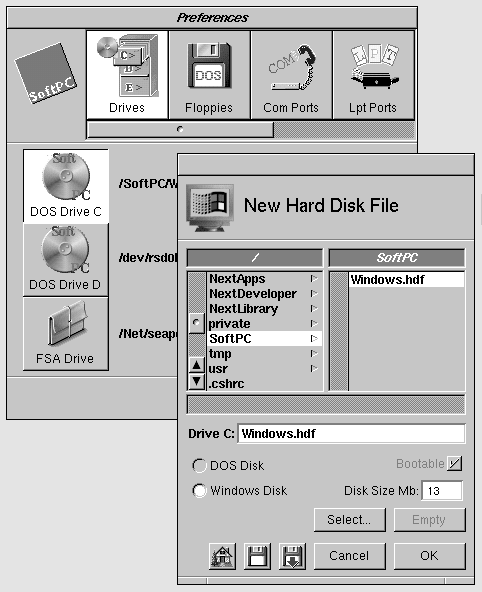
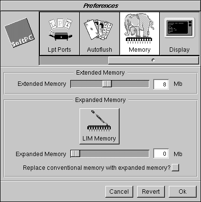
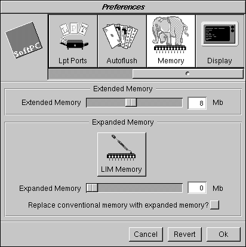
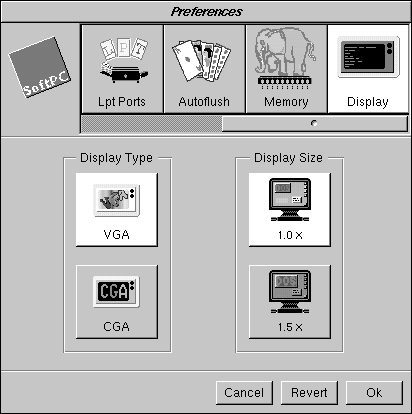

NEXTSTEP In Focus, Winter 1994 (Volume 4, Issue 1).
Copyright ©1994 by NeXT Computer, Inc. All Rights Reserved.
Using SoftPC for Intel
 Joe Hollowood
Joe Hollowood
To get the most out of Insignia Solutions' SoftPC for NEXTSTEP on Intel-based computers, you should set its preferences appropriately and ensure that your system is configured properly. In addition, you can use a number of tricks and troubleshooting tips to optimize its performance.
Best of Both Worlds
SoftPC performs quite well in comparison with 486-class PCs running DOS and Microsoft Windows. However, to get the best performance from it and make the most of its features, it helps to understand a few concepts about setting it up and keeping it running.
SoftPC Compatibility
SoftPC for NEXTSTEP for Intel processors runs most real and protected mode DOS and standard mode Windows programs that comply with the DOS protected mode interface (DPMI) specification.
Note: Applications that require Windows enhanced mode won't work with the current version of SoftPC. Some such applications include FrameMaker® and WordPerfect® 6.0. A future version of SoftPC will run these apps.
Setting Preferences
Although the default SoftPC preference settings are adequate for running a DOS or Windows session, you need to set some preferences explicitly to enable various features, such as access to floppy disks and serial ports. You can also set other preferences to modify the video and memory, for example. Here's how to set the basic preferences.
Setting the SoftPC drives
Instead of requiring a dedicated DOS or Windows partition on your hard drive, SoftPC uses special files called container files. Container files are regular UNIX® files that act as virtual DOS disk drives. DOS and Windows system files are stored in them, as are your own
applications and data files. Container files use the .hdf file name extension.
The first time you run SoftPC, it prompts you to create a container file. You can choose the size of the file as well as whether or not to install Windows. There is a minimum file size, and using Windows increases the minimum size requirement. You should plan ahead and choose a size that will allow you to install all of the software you will be using and allow some room for growth--once you create a container file, you can't modify its size.

Figure 1: Creating a container file for Windows
After naming the container file and choosing its location, SoftPC de-archives the necessary system files and sets the new container file as the default boot drive, or the C: drive. A SoftPC session allows simultaneous access for up to two DOS container files, C: and D:.
You can create as many container files as you need and use preferences to select which files to use for C: and D: in the current session. You can also create container files that don't contain any DOS or Windows system files, to use just as application and data partitions. See the SoftPC on-line help to find out how to create new container files.
Putting the DOS and Windows system files in a separate container file from applications and data allows you to update the system in the primary container file without affecting user data. It also allows users on a network to share the primary container file while keeping their personal data separate.
You can't boot SoftPC from a native DOS partition on your hard drive, even if DOS is installed on it. You can boot SoftPC only from a container file containing DOS system files.
FSA drive
In addition to container files, SoftPC also provides access to a file sharing architecture (FSA) drive, specified by the E: drive. The FSA drive provides DOS and Windows access to any NEXTSTEP folder or file system. For example, suppose you set the FSA drive to ~jholly, the home directory of user jholly. You can then access files and folders in that directory from within SoftPC by using the E: partition. You set the FSA drive using preferences, and you can change it during a SoftPC session.
An FSA drive is particularly useful in a networked environment because it can act as a central location for applications or company data. For example, suppose you create a folder called DOSApps on the file server bigserver. When you set up a SoftPC client, set its FSA drive to be /Net/bigserver/DOSApps. Now SoftPC users can access this central data repository as their drive E:.
You can also use an FSA drive to access a CD-ROM. Instead of loading the CD-ROM drivers under DOS or Windows, set the FSA drive to the name under which the CD-ROM mounts in the workspace. You can then read the files from the CD-ROM from the E: drive.
Floppy disk drives
Although NEXTSTEP allows you to use only one floppy disk drive, SoftPC allows you to configure it as either Floppy Drive A: or B:. If you configure preferences to use Floppy A:, SoftPC looks for a bootable DOS floppy in your drive each time you restart. If you are going to be restarting SoftPC often and don't want to boot from a floppy, using Floppy B: is more convenient.
You can set either Floppy A: or Floppy B: to these configurations:
| n | None No floppy disk drive |
| n | Internal The internal 3.5" floppy disk drive, /dev/rfd0b |
| n | External An optional external 3.5" SCSI floppy disk drive, /dev/rsd1h |
If you want to be able to boot from a floppy disk, configure Floppy A: to be either Internal or External and restart SoftPC by choosing Restart from the Actions menu. Make sure to insert a bootable DOS floppy in the drive.
Although Floppy B: has the same configurations as Floppy A:, it's not bootable. If Floppy B: is configured to Internal or External, SoftPC will still boot from drive C:, even if you insert a bootable floppy disk.
Note: Don't configure SoftPC to use both Floppy A: and Floppy B:.
Communication and printer ports
SoftPC allows you to configure two communication ports and two printer ports.
The communication ports are identical to each other and have several output options:
| n | None No access to the serial ports. |
| n | Postscript Redirects all communications to the UNIX command lpr. |
| n | Laserjet Sends output to the program lj2ps, which converts HP® LaserJet® codes to PostScript® codes, then sends the PostScript code to lpr. |
| n | File Sends output to /tmp/SoftPC.tmp. |
| n | Pipe Sends output to any UNIX command you specify; the default is lpr. |
| n | Serial A Sets the port to /dev/ttya. |
| n | Serial B Sets the port to /dev/ttyb. |
| n | Printer A Same as Serial A. |
| n | Printer B Same as Serial B. |
You can configure the communication ports to be available simultaneously. Data transfer through the two communication ports is reliable up to 9600 baud. If you need faster speeds, you should enable hardware or software error correction.
The options for configuring printer ports are the same as those for communication ports except that there's no Serial A or Serial B option. The most common setting to use is Postscript.
When you choose the Postscript option for Com1, Com2, LPT1, or LPT2, all output is sent to a program called PS. PS handles PostScript code more intelligently than lpr, which simply dumps the code to the printer.
Autoflush
When data is sent to the communication or printer ports, SoftPC first stores it in a buffer. When it flushes a buffer, it sends the data in the buffer to the specified modem, printer, or other device. You can use the Autoflush preference to specify how often all ports are flushed. The range is from 1 to 50 seconds. The default is 10 seconds, but you can experiment to find the ideal flush time.
If the load on SoftPC is heavy, you can usually increase Autoflush to get better performance.
Memory
PC applications can use two different types of memory, extended and expanded memory. When you use DOS and Windows applications with SoftPC, you need to consider how much extended or expanded memory they require. Although you can use any combination of extended and expanded memory, SoftPC's performance degrades if you set both too high.
 

Figure 2: The Extended Memory and Expanded Memory preferences in SoftPC
On a PC running native DOS, you would modify CONFIG.SYS to set extended and expanded memory. With SoftPC you set them through SoftPC's Preferences.
Extended memory
Extended memory or extended memory specification (XMS) is used by protected mode PC applications. You can allocate from 1 to 16 megabytes to be extended memory.
Although the default setting is 4 megabytes of extended memory, assigning more through preferences may provide better performance for certain applications. Using more than 8 megabytes of extended memory doesn't seem to increase performance significantly and may, in fact, degrade SoftPC's performance. Use the optimal setting for your application.
Expanded memory
Expanded memory, or Lotus®-Intel®-Microsoft® (LIM) expanded memory specification, is used by older real-mode PC applications. You can allocate from 0 to 32 megabytes as expanded memory. In addition, you can replace between 512 and 640 kilobytes of conventional memory with expanded memory. This isn't a widely used memory model. It's provided by SoftPC to ensure compatibility with applications that need it.
Displays
You specify your display with the Video preferences; see Figure 3. SoftPC supports two display types. The first is VGA, which gives you high resolution and many colors. The other video mode, Color Graphics Adapter (CGA), is provided for certain older applications that require this mode. Many games use CGA graphics mode.
If a PC application you use requires SuperVGA, VGA, or EGA mode, choose the VGA mode from SoftPC Preferences.
The Display Size preference provides the option to magnify the SoftPC display area. To represent the standard PC pixel proportions, use the1.0x setting. You can choose the 1.5x setting to reduce eyestrain, especially when viewing text-only applications.
If you're running NEXTSTEP in grayscale mode, you can set a third option, Display Grays. This option lets you select either 4-Gray or 256-Gray mode. 256-Gray mode is very sharp and provides much more detail than 4-Gray mode.
Note: If the Display Grays option is available, window mode in SoftPC runs much more slowly because there's no monochrome Interceptor driver. See "Using Full-Screen and Window Modes" for details.

Figure 3: Choosing display type and size
Using Full-Screen and Window Modes
SoftPC for NEXTSTEP for Intel processors can run in either of two modes, window or full-screen. Which you choose depends on what you need to do and which applications you use.
Window mode
In window mode, the DOS or Windows environment appears in a NEXTSTEP window. This mode allows you to share data between DOS/Windows and NEXTSTEP applications. This mode also makes switching between SoftPC and NEXTSTEP apps easier and quicker. You can run multiple active SoftPC sessions in window mode.
In many applications, good drawing performance is crucial. To improve the performance of SoftPC in window mode, Insignia used NeXT's Interceptor technology. Interceptor allows applications to bypass NEXTSTEP's standard drawing technology, Display PostScript®, and directly access the screen. Because it uses Interceptor, SoftPC in window mode provides 486-class graphics performance.
To take advantage of Interceptor and get maximum graphics performance, make sure that the SoftPC window isn't at all obscured by any NEXTSTEP elements, including windows, menus, panels, or the dock. The reason is that the Interceptor relies on the window server's clipping mechanism to limit drawing to visible areas. When the SoftPC window is partially obscured, window contents are passed to the window server and clipped before being displayed. Transferring all this data to the window server slows down SoftPC's drawing. This may change in the future.
Full-screen mode
If window mode doesn't provide the graphics performance you want, you can run SoftPC in full-screen mode. In this mode, the whole screen is taken over by SoftPC; NEXTSTEP is still running. SoftPC directly accesses the native VGA hardware, bypassing completely any NEXTSTEP drawing routines. This provides near-native graphics performance for applications that need it. In SoftPC's current implementation, full-screen mode is limited to a screen resolution of 640 x 480 pixels.
Switching between window and full-screen
If SoftPC is in DOS, you can toggle between window and full-screen modes by typing Command-Shift-f.
If you're running Microsoft Windows in full-screen mode, typing Command-Shift-f toggles back to window mode but freezes the Windows environment while you work in NEXTSTEP. Choosing Full Screen from the SoftPC panel returns you to full-screen mode.
If you start Windows while SoftPC is in window mode, you can't switch to running Windows in full-screen mode. Instead, you must first quit Windows and then switch to full-screen mode.
Choosing and Using Graphics Adapters
In general, any graphics adapter that NEXTSTEP supports runs SoftPC in both window mode and full-screen mode.
The notable exception is a Compaq QVision adapter used in a Compaq system. SoftPC will run only in window mode on this combination.
Any SuperVGA adapter that NEXTSTEP supports is slower in window mode due to the lack of a grayscale Interceptor driver. If you use a SuperVGA adapter, run SoftPC in full-screen mode only. This is not only faster, but it also gives you color. Because SoftPC running in full-screen mode accesses the graphics adapter directly, you get a color image even though NEXTSTEP on a SuperVGA adapter normally runs in grayscale.
Standard VGA allows SoftPC to run in window mode only. Again, due to the lack of a grayscale Interceptor driver, performance is slower. These constraints make running SoftPC in Standard VGA mode less than ideal.
Making It All Work
This section describes some real-world situations you may encounter when using SoftPC.
It briefly describes how to configure SoftPC to print, access CD-ROMs, network, and copy and paste information between SoftPC and NEXTSTEP.
Printing
To print from SoftPC, you need to take several steps. First, configure the printer in NEXTSTEP by selecting the appropriate printer in Print Manager. Next, configure the printer in SoftPC. Finally, configure the printer in the DOS or Windows application you're using.
For example, suppose you want to print on a printer named HPLaserjet4. First, select HPLaserjet4 in Print Manager. Next, in SoftPC's Preferences, set LPT1 to Laserjet. Finally, select HP Laserjet from the Windows Print Manager. SoftPC is now ready to print.
You can now print as usual from DOS and Windows applications. You can also use the Print command in SoftPC to print screen shots of the SoftPC window, if you're running in window mode.
Using CD-ROMs
To access a CD-ROM from SoftPC, first mount the CD-ROM in Workspace ManagerTM. After it's mounted, you need to load the CD-ROM drivers into SoftPC. Do this by running the command USE_CD from the DOS prompt. This runs a DOS batch file that installs the MSCDEX CD-ROM driver software and then assigns the CD-ROM to drive F:.
If you need to use a CD-ROM only briefly, you can use the trick described in "FSA Drive."
Networking
SoftNode, an integrated product in SoftPC for Intel, provides client access to Novell NetWare® networks. This provides a single out-of-the-box solution for NetWare connectivity.
You use NetWare Manager to attach NEXTSTEP to a Novell® network. For details, see the NEXTSTEP Network and System Administration book.
Attaching SoftPC to a NetWare network is simple. First, use NetWare Manager to enable NEXTSTEP's NetWare software and reboot. To make SoftPC recognize the NetWare network, run the command USE_IPX at the DOS prompt. This loads SoftNode and makes the SoftPC session a client on the NetWare network. After you've run USE_IPX, you can log into the NetWare server. The program LOGIN.EXE, which is located on the L: drive by default, logs into the NetWare server.
Once on the network, SoftPC can act as an independent client from the NEXTSTEP client. This provides abilities like having one SoftPC session running Novell NetWare and another running NFS®. You can use products like PC/NFS and PC/TCP/IP to allow SoftPC to access NFS and TCP/IP, respectively.
Copying and pasting between NEXTSTEP and SoftPC
If you run Windows in SoftPC's window mode, Insignia's SmartCopy application allows you
to copy and paste between NEXTSTEP and Windows applications.
Within SoftPC, use the Cut, Copy, and Paste commands from the menu of the application you are using, not SoftPC's Edit menu. For example, if you want to copy an image from the Windows PaintBrush accessory to the Edit application in NEXTSTEP, make a selection and choose the Copy command from PaintBrush's Edit menu (not SoftPC's), then select Paste from within Edit.
SmartCopy currently doesn't work in full-screen mode.
Troubleshooting
The time you're most likely to run into trouble with SoftPC is during initial configuration. Once SoftPC is up and running properly, you'll find it acts just like a real PC. However, there are some common problems you might encounter after configuration. Here's how to handle them.
No permission to change the hard drive
When you launch SoftPC, if you see a panel telling you that SoftPC is mounting the hard drive as read-only, you don't have permission to make changes to the hard drive. However, you always need to mount the drive as read-write, because Windows has to modify some configuration files when it launches.
To mount the drive as read-write, you must change the permissions on the hard disk file
to allow all users to read and write it. You do this with the chmod command. For example, if the container file is /SoftPC.app/disk.hdf, you'd run the following command as root.
chmod a+rw /SoftPC.app/disk.hdf
Poor performance in window mode
If you notice that drawing and scrolling performance seems slow, chances are SoftPC isn't using Interceptor to its full potential.
Make sure that no windows, menus, icons, or the dock are covering the main SoftPC window. This will give dramatically better graphics performance. Also make sure that the WinIdle program is in the Startup application group in Windows' Program Manager, and that it's running.
Stuck cursor in the SoftPC window
Sometimes SoftPC can trap your cursor in its window. When you try to move the cursor out of the window, it just stops at the edge of the SoftPC window.
To fix this, type Command-m to detach the mouse from SoftPC. If that doesn't work, type Command-h to hide SoftPC. This should at the same time free your mouse. Click in another NEXTSTEP application's window before unhiding SoftPC or the problem will persist.
Colored square under the mouse cursor
This is a known bug. The square goes away as soon as the SoftPC window is updated. If you can't wait for that, you can move the mouse off of and then back over the square to get rid of it.
Can't switch to full-screen mode
If, when you're trying to go to full-screen mode, SoftPC says that full-screen mode isn't supported in this session, you probably haven't set the Video preference to VGA.
To fix this problem, set SoftPC's Video preference to VGA before you switch to full-screen mode. The first time you set this preference, you must quit SoftPC, saving your preferences, and then restart it.
In some rare cases, SoftPC will let you go to full-screen mode, but the first keystroke will cause SoftPC to crash. In this case, your hardware combination is incompatible.
Can't use floppies in full-screen mode
If SoftPC isn't recognizing Floppy A: in full-screen mode, you don't have the preferences set properly. Because there's no status bar in full-screen mode, this is very easy to overlook.
Be sure you've set the floppy drive permissions correctly in window mode. When you're in full-screen mode, type Command-f to attach or detach the floppy drive. And as always, choose the Eject command from Workspace Manager before ejecting the floppy.
Full-screen isn't supported in this session
This error generally indicates that your graphics adapter isn't capable of running in full-screen mode. Check the Hardware Compatibility Guide to see which graphics adapters support full-screen mode. If your graphics adapter supports full-screen mode and you still have this problem, make sure you set the Video preference to VGA.
SoftPC can't initialize the hardware
This rare error indicates that SoftPC wasn't installed by root. Delete SoftPC, log in as root, and reinstall SoftPC.
NetWare seems very slow under SoftPC
All NetWare functions should behave properly, but some operations will be slower than they are under NEXTSTEP. A future version of SoftPC will address this problem.
Keys repeat in DOS in full-screen mode
If you're only typing a few things, type slowly. If you need to do a lot of typing, run the application in window mode instead.
SoftPC locked up
When all else fails and you find that SoftPC has locked up on you, you can run the command dread -o SoftPC | dremove, as root from Terminal. This removes all of your SoftPC preferences and allows you to reconfigure SoftPC from scratch.
Conclusion
I hope this article has provided a good range of concepts and troubleshooting techniques. If you run into situations that aren't covered in this article, refer to the SoftPC on-line help. In addition, licensed users can call Insignia's technical support group--the number is listed in the on-line help.
Oh, and I highly recommend the game Alone In the Dark from Interplay.
Joe Hollowood is the Lab Supervisor for NeXT's Software Quality Assurance group. He has worked closely with Insignia Solutions on SoftPC for NEXTSTEP for Intel processors. You can reach him by e-mail at Joe_Hollowood@next.com.
Special thanks to Amir Gharaat and Insignia Solutions for their help with this article.
Why Can't I Run My Own Version of Windows?
Although you can install your own version of DOS 6.x, Microsoft Windows is a different story. Insignia has licensed the Microsoft Windows source code and made some modifications to optimize its performance in window mode and full-screen mode. Insignia uses a similar approach for Microsoft Windows NT.
As a result, some of the standard video drivers and system configuration files shipped with an off-the-shelf copy of Windows won't work.-JH